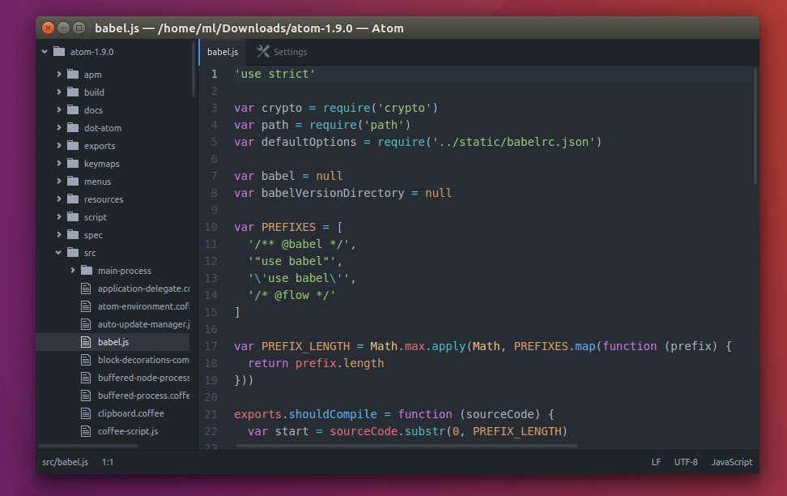

Az ATOM Editor
Az Atom egy ingyenes, nyílt forráskódú kódszerkesztő program Windows, OS X, és Linux rendszerekre, mely rengeteg forrást és kiterjesztést, fejlesztői környezetet támogat.
Ezek közt:
- HTML
- CSS 
- GitHub Flavored Markdow
- Git
- C/C++
- C#
- Go
- Java
- JavaScript
- JSON
- Python
- PHP 
A program felépítése roppant egyszerű és hasonlít a Visual Studio Code nevezetű programra.
AGitHub ugyanakkor kellemetlen változást jelentett be mindazon fejlesztők számára, akik az Atom kódszerkesztőt vagy azon alapuló más szoftver használnak. A szervezet ugyanis közölte, hogy - nyolc évvel első változatának kiadása után - nyugdíjba küldi a villámgyors, könnyen személyre szabható és webes technológiákra épülő nyílt forrású szerkesztőt.
Bár az elmúlt pár évben az Atom már nem kapott jelentős funkcionális fejlesztéseket, a Microsoft továbbra is javította annak biztonsági és egyéb jellegű hibáit. Ez azonban idén december 15-ével meg fog szűnni  - ezt követően ugyanis a cég archív állapot helyez minden, az Atom-mal összefüggő kódtárak és egyéb projektet.
- ezt követően ugyanis a cég archív állapot helyez minden, az Atom-mal összefüggő kódtárak és egyéb projektet.
A lépés kellemetlen hatással lehet más, harmadik felek által készített IDE-kre, szerkesztőkre és más fejlesztői termékekre is, amik az Atom-ra építenek. Bár utóbbi forrása nyilván ezek után is nyílt marad és tovább lesz használható, a karbantartás immár a szóban forgó harmadik felekre hárul majd, ami problémát jelenthet utóbbiak számára.
A Microsoft oldalán a Visual Studio Code és a GitHub CodeSpaces történelmileg szintén az Atom-ra épült, ugyanakkor ezek fejlesztése és kódbázisa már rég elszakadt utóbbitól. Ezzel összefüggésben a Microsoft előbbieket továbbra is fejleszteni és támogatni fogja, az Atom nyugdíjba küldése után is.